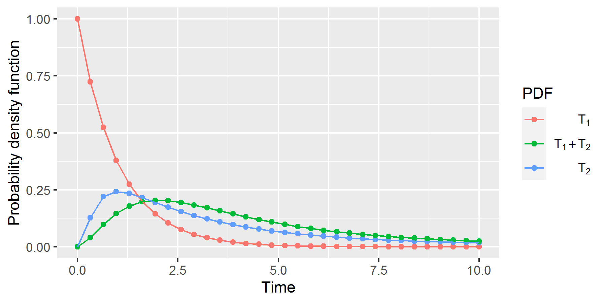
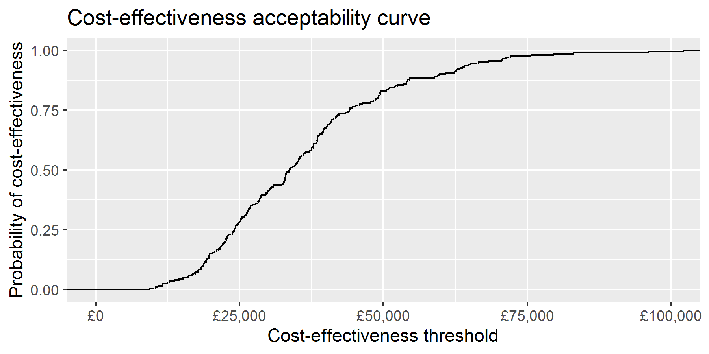
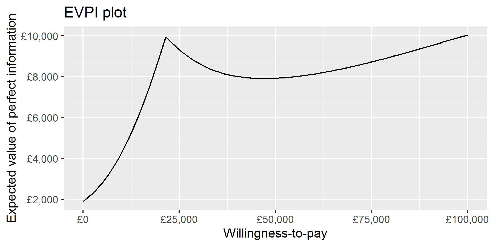
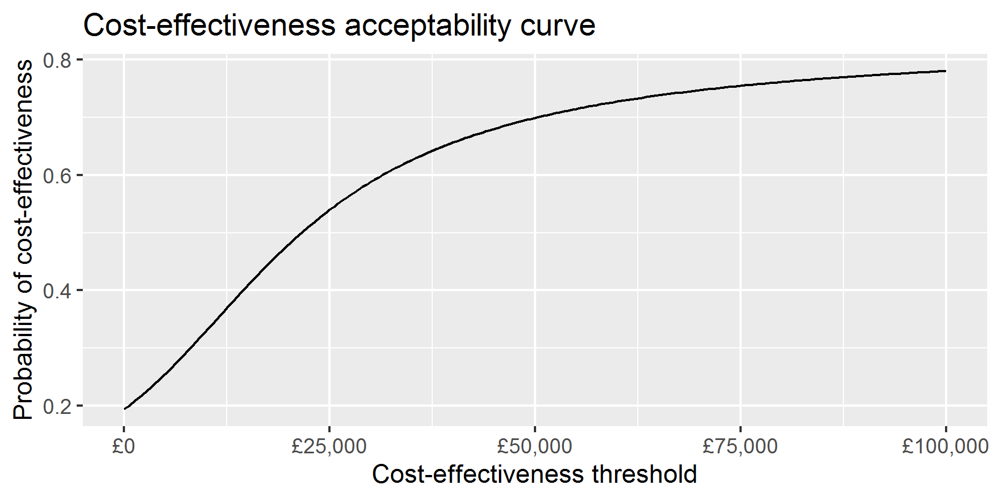
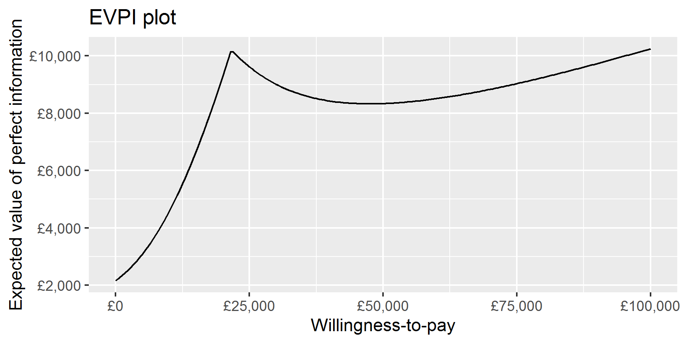

- Alternatives to existing cohort simulation and microsimulation approaches
- Alternative to Monte Carlo probabilistic sensitivity analysis
Recent advances in health economic modelling
Moment-generating functions, fast Fourier transforms and the Delta-PSA method
Tristan Snowsill, @TMSnowsill
Senior Research Fellow
Topics
Model-based health economic evaluations
We want to evaluate the costs and benefits of two or more healthcare technologies
We don't have the ability to measure these over the required time horizon so we will use modelling
We frequently identify a finite number of discrete health states and events which lead to changes in (transitions between) these health states
Markov cohort simulation
Many health economic models use Markov cohort simulations characterised by
- Discrete time steps (cycles)
- Finite mutually exclusive and collectively exhaustive health states
- Transition probabilities are unchanging or related to system time
Time in state transition models
- System / model / wall time: How long since the model started?
- System time + age at start (if constant) = Age now
- Sojourn time: How long have I been in this state
Both can be useful
System time
- General mortality
- Incidence of disease
- Baseline health-related quality of life (declines with age)
Sojourn time
- Medical management
- Disease progression
- Disease fatality
Sojourn time in Markov cohort simulation
We generally do not know how many cycles an “individual” has spent in a state
If we need to know this we change the model structure by adding tunnel states
Issues with tunnel states
Tunnel states increase computational complexity
To illustrate, if we have a model with tunnel states and want to halve the cycle length, the number of cycles doubles and the number of tunnel states doubles
We either need to set a limit on the amount of sojourn time-dependence the model can represent, or we need to have as many tunnel states as cycles
Alternatives to tunnel states
- Individual patient simulation (Markov microsimulation, Discrete Event Simulation, agent-based models, etc.)
- Partitioned survival approach
- Payoff method
- Moment-generating function (MGF) method
- Fast Fourier transform (FFT) method
Model specification
The MGF and FFT methods are state transition cohort simulation methods
Instead of describing state transitions by transition probabilities we use (conditionally independent) time-to-event distributions
Competing risks are represented by multiple transitions out of a single state, with the earliest time-to-event random variable deciding which event takes place
Convolution integrals
The reason it is hard to include sojourn time is that it leads to convolution integrals. The probability density function for the sum of two independent variables \(X\) and \(Y\) is:
\[ (f_X \ast f_Y)(t) = \int_{-\infty}^{\infty}{f_X(s)f_Y(t-s) \mathrm{d}s} \]
Or if \(f_X(t)\) and \(g_X(t)\) are zero when \(t < 0\) (as is the case for time-to-event variables):
\[ (f_X \ast f_Y)(t) = \int_{0}^{t}{f_X(s)f_Y(t-s)\mathrm{d}s} \]
When you need to evaluate this for multiple values of \(t\) it is challenging using standard numerical methods
Convolution with integral transforms
Convolution is difficult in the time domain but is easy in the Laplace and frequency domains
\[ \begin{aligned} \mathcal{L}\{f \ast g\} &= \mathcal{L}f \cdot \mathcal{L}g \\ \mathcal{F}\{f \ast g\} &= \mathcal{F}f \cdot \mathcal{F}g \end{aligned} \]
Laplace transform of a function \(f(t)\) defined for \(t \ge 0\):
\[ \mathcal{L}\{f\}(s) \mathrel{\mathop:}= \int_{0}^{\infty}{f(t)e^{-st}\mathrm{d}t} \]
Fourier (frequency) transform:
\[ \mathcal{F}\{f\}(\theta) \mathrel{\mathop:}= \int_{-\infty}^{\infty}{f(t) e^{-(i \theta)t}\mathrm{d}t} \]
(where \(i^2 = -1\))
Laplace transform of probability density functions
If we have a random variable, \(T\), the moment-generating function for \(T\) is defined as:
\[ M_T (s) \mathrel{\mathop:}= \mathbb{E}\left[e^{sT}\right] \]
And if \(T \ge 0\), and has a probability density function \(f(t)\), then
\[ M_T(-s) = \mathbb{E}\left[e^{-sT}\right] = \int_{0}^{\infty}{f(t)e^{-st}\mathrm{d}t} = \mathcal{L}\{f\}(s) \]
So the moment-generating function for the sum of independent random variables is the product of their individual moment-generating functions
Fourier transforms of probability density functions
The Fourier transform of a probability density function is its characteristic function and has the same property
Using moment-generating functions in state transition modelling
Let's imagine a very simple model with just two states, alive and
dead, and let \(T\) be the time-to-event variable for death
The life years lived is a function of random variables:
\[ \int_0^T{1\,\mathrm{d}t} = T \]
and the expected life years lived is:
\[ \mathbb{E}\left[T\right] \]
Using moment-generating functions in state transition modelling
Now imagine we want to know the discounted life years lived:
\[ \int_0^T{e^{-rt}\mathrm{d}t} = \frac{1-e^{-rT}}{r} \]
The expected discounted life years lived is then:
\[ \mathbb{E}\left[\frac{1-e^{-rT}}{r}\right] = \frac{1-\mathbb{E}\left[e^{-rT}\right]}{r} = \frac{1 - M_T (-r)}{r} \]
i.e., we can evaluate the moment-generating function at a single point (\(s = -r\)) to calculate the expected discounted life years.
Note: We are using \(e^{-rt}\) as a discount function rather than \((1+R)^{-t}\) but these are equivalent when \(r = \ln(1+R)\)
Using moment-generating functions in state transition modelling
Let's now consider a three state model
States:
- Stable disease
- Progressive disease
- Dead
Events:
- \(T_1\): disease progression
- \(T_2\): death post-progression
For now, it is not possible to die from the Stable disease state
Using moment-generating functions in state transition modelling
Now (expected) (discounted) life years are given by:
\[ \begin{aligned} \mathrm{LY} &= \int_{0}^{T_1+T_2}{1\,\mathrm{d}t} \\ &= T_1 + T_2 \\ \mathbb{E}\left[\mathrm{LY}\right] &= \mathbb{E}\left[T_1\right] + \mathbb{E}\left[T_2\right] \\ \mathrm{LY_d} &= \int_0^{T_1+T_2}{e^{-rt}\mathrm{d}t} \\ &= \frac{1 - e^{-r(T_1+T_2)}}{r} \\ \mathbb{E}\left[\mathrm{LY_d}\right] &= \frac{1 - \mathbb{E}\left[e^{-r(T_1+T_2)}\right]}{r} \\ &= \frac{1 - M_{X_1+X_2}(-r)}{r} \\ &= \frac{1 - M_{X_1}(-r) M_{X_2}(-r)}{r} \end{aligned} \]
Using moment-generating functions in state transition modelling
We can split the discounted life years lived into those pre-progression and post-progression simply:
\[ \begin{aligned} \mathrm{LY_d} &= \mathrm{PFLY_d} + \mathrm{PPLY_d} \\ &= \int_0^{T_1}{e^{-rt}\mathrm{d}t} + \int_{T_1}^{T_1+T_2}{e^{-rt}\mathrm{d}t} \\ \mathbb{E}\left[\mathrm{PFLY_d}\right] &= \frac{1-M_{X_1}(-r)}{r} \\ \mathbb{E}\left[\mathrm{PPLY_d}\right] &= \frac{M_{X_1}(-r)(1-M_{X_2}(-r))}{r} \end{aligned} \]
Using moment-generating functions in state transition modelling
Clearly if we have health states with constant QALY weights and cost accrual rates (payoffs) we can calculate lifetime discounted costs
We can also easily include one-off costs associated with events:
\[ \mathbb{E}\left[C\cdot e^{-rT}\right] = C \cdot M_T(-r) \]
We can also incorporate payoff functions which are exponential or polynomial in system time or sojourn time (and any linear combinations of these)
Details in: Snowsill T. A new method for model-based health economic evaluation utilizing and extending moment-generating functions. Med Decis Making 2019; 39(5): 523–539
Using moment-generating functions in state transition modelling
What if we can die from the stable disease state?
We incorporate competing risks by:
- Calculating the probabilities of different paths through the model being taken
- Performing calculations with conditional time-to-event distributions given the event occurred before other competing risks
- Calculating lifetime discounted outcomes for each of the paths
- Using path probabilities to construct a weighted average
Using FFT in state transition modelling
The fast Fourier transform (FFT) is an efficient algorithm for performing the discrete Fourier transform (DFT)
If we have a mesh of \(2^k\) time points (analogous to time cycles) and the probability density functions of two time-to-event variables evaluated for these time points, then:
\[ [(f_{T_1} \ast f_{T_2})(t)]_{1:2^k} = \left[\frac{T}{2^k}\mathcal{F}^{-1}\left\{ \mathcal{F}(f_{T_1}(t)_{1:2^k} \mid 0_{1:2^k}) \cdot \mathcal{F}(f_{T_2}(t)_{1:2^k} \mid 0_{1:2^k}) \right\}\right]_{1:2^k} \]
i.e., to get the probability density function for the sum of \(T_1\) and \(T_2\) we:
- Pad the probability density functions to the right with \(2^k\) zeroes
- Use the FFT to calculate the DFT of the results of Step 1
- Multiply the results of Step 2 together
- Calculate the inverse FFT of the result of Step 3
- Scale appropriately and throw away the rightmost \(2^k\) values
Using FFT in state transition modelling
Using FFT in state transition modelling
convolute <- function(f, g, T_max) {
assertthat::are_equal(length(f), length(g))
N <- length(f)
return(2*T_max*Re(fft(fft(c(f,rep(0,N))) * fft(c(g,rep(0,N))), inverse = TRUE)[1:N])/(4*N^2))
}
sim_FFT <- tibble(
t = seq(0, 10, length.out = 32),
f1 = dexp(t),
f2 = dlnorm(t, meanlog = 1),
f12 = convolute(f1, f2, 10)
)
Using FFT in state transition modelling

Using FFT in state transition modelling
So the FFT can help us to get the probability density functions for sums of independent random variables
What else?
Using FFT in state transition modelling
The relationship between convolution and integration
If \(f(t) = \frac{\mathrm{d}F(t)}{\mathrm{d}t}\) and \(g(t) = \frac{\mathrm{d}G(t)}{\mathrm{d}t}\)
\[ (F \ast g)(t) = (f \ast G)(t) = \int_{-\infty}^t{(f \ast g)(\tau)\mathrm{d}\tau} \]
Therefore if we want to know the cumulative distribution function for sums of independent random variables, we use the cumulative distribution function for one of them in the place of the probability density function
Using FFT in state transition modelling
Fundamental finding
If a quantity, \(q\), is accrued while within a state as
\[\frac{\mathrm{d}q}{\mathrm{d}s} = \psi(s)\]
where \(s\) is the sojourn time in the state, then:
\[ \frac{\mathrm{d}q}{\mathrm{d}t} = (\psi S \ast \theta)(t) \]
where:
- \(t\) is system time
- \(\theta(t)\) is the probability density function for transitions into the state
- \(S(s)\) is the survival function for remaining in the state
Using FFT in state transition modelling
For example, if \(q\) is life years (LY) lived, then \(\psi(s) = 1\) for all states other than death, so
\[ \frac{\mathrm{d}\mathrm{LY}_i}{\mathrm{d}t} = (S_i \ast \theta_i)(t) \]
describes the life years lived in state \(i\)
This is also the state occupancy equation!
Using FFT in state transition modelling
More generally \(\psi(s)\) could represent the rate at which a payoff is accrued as a function of time in the state, e.g., quality of life might be initially low and costs initially high after undergoing surgery, but these both improve over time
If payoffs are better described in terms of model time, the framework is still effective:
\[ \frac{\mathrm{d}q}{\mathrm{d}t} = \psi(t)\left[(S \ast \theta)(t)\right] \]
Using FFT in state transition modelling
We then integrate \(\frac{\mathrm{d}q}{\mathrm{d}t}\) to produce \(q(t)\) using any suitable method, e.g.:
- Euler method (i.e., Markov cohort simulation)
- Trapezoidal method (life-table method)
- Simpson's rule
Using FFT in state transition modelling
How do we determine \(S(s)\) and \(\theta(t)\)?
\(S(s)\) is the product of the survival functions for all transitions out of a state
\(\theta(t)\) is derived from the probability density functions for TTE variables representing transition paths through the model to the current state (adjusting for competing events)
Forthcoming paper describes how to derive \(\theta(t)\) and how to adjust for other-cause mortality which is dependent on system time
Propagating uncertainty through decision analytic models: the Delta-PSA method
Probabilistic sensitivity analysis (PSA)
What is the impact of uncertainty of model inputs (parameters) on decision uncertainty?
Propagating uncertainty through decision analytic models: the Delta-PSA method
Monte Carlo PSA (MC-PSA)
- Repeatedly sample parameter values \(\pmb{\theta}_i\) from joint distribution for parameters
- Run the model for each \(\pmb\theta_i\) to get outcomes \(\mathbf{y}_i\)
- Analyse the distribution of \(\mathbf{y}_i\) in some way to understand decision uncertainty
Propagating uncertainty through decision analytic models: the Delta-PSA method

Propagating uncertainty through decision analytic models: the Delta-PSA method

Propagating uncertainty through decision analytic models: the Delta-PSA method

Propagating uncertainty through decision analytic models: the Delta-PSA method

Propagating uncertainty through decision analytic models: the Delta-PSA method
The Delta-PSA (\(\Delta\)-PSA) method
Treat the model as a function
\[ \mathbf{y} = \mathbf{g}(\pmb\theta) = \begin{bmatrix} g_1(\pmb{\theta}) \\ \vdots \\ g_m(\pmb{\theta}) \\ \end{bmatrix} \]
And use Taylor series approximations to estimate \(\mathbb{E}\mathbf{g}(\pmb{\theta})\) and \(\operatorname{Var}[\mathbf{g}(\pmb{\theta})]\) given the expected value and variance of \(\pmb\theta\)
\[ \begin{aligned} \mathbb{E}g_k(\pmb\theta) &\approx g_k(\mathbb{E}\pmb\theta) + \frac{1}{2}\operatorname{tr}\left(H_k(\mathbb{E}\pmb\theta) \cdot \Sigma_\theta\right) \\ \operatorname{Var}[\mathbf{g}(\pmb\theta)] &\approx J \cdot \Sigma_\theta \cdot J^\top \end{aligned} \]
Where \(J\) is the Jacobian matrix \(\frac{\partial \mathbf{g}}{\partial\pmb\theta}\) and \(H_k\) are the Hessian matrices \(\frac{\partial^2 g_k}{\partial\pmb\theta^2}\)
Propagating uncertainty through decision analytic models: the Delta-PSA method
Let \(g_1(\pmb\theta)\) be incremental costs and \(g_2(\pmb\theta)\) be incremental benefits, and let \(\hat\mu_g = \begin{bmatrix}\hat\mu_1 \\ \hat\mu_2\end{bmatrix}\) and \(\hat\Sigma_g = \begin{bmatrix} \hat\sigma_{11} & \hat\sigma_{12} \\ \hat\sigma_{21} & \hat\sigma_{22}\end{bmatrix}\) be the estimated mean and variance of \(\mathbf{g}(\pmb\theta) = \begin{bmatrix}g_1(\pmb\theta) \\ g_2(\pmb\theta)\end{bmatrix}\).
Then the expected value, \(m(\lambda)\), and standard deviation, \(s(\lambda)\), of the distribution of incremental net monetary benefit at WTP \(\lambda\) are:
\[ \begin{aligned} m(\lambda) &= -\hat\mu_1 + \lambda \hat\mu_2 \\ s(\lambda) &= \sqrt{\lambda^2 \hat\sigma_{22} - 2\lambda \hat\sigma_{12} + \hat\sigma_{11}} \end{aligned} \]
\[ \mathrm{CEAC}(\lambda) = \Phi\left(\frac{m(\lambda)}{s(\lambda)}\right) \]

\[ \begin{aligned} \mathrm{EVPI}(\lambda) &= \mathbb{E}\left\{\left|\mathrm{INMB}(\lambda)\right|\right\} - \left|\mathbb{E}\left\{\mathrm{INMB}(\lambda)\right\}\right| \\ &= \left\{s(\lambda)\sqrt{\frac{2}{\pi}}e^\left(-{m(\lambda)^2}/{2s(\lambda)^2}\right) - m(\lambda)\left(1 - 2 \Phi\left(\frac{m(\lambda)}{s(\lambda)}\right)\right)\right\} - \left|m(\lambda)\right| \end{aligned} \]

Propagating uncertainty through decision analytic models: the Delta-PSA method
How do we find the derivatives of model outputs with respect to inputs?
- Markov cohort simulation: product rule for differentiation
- MGF/FFT methods: Leibniz rule
Note: The method will work best when the joint distribution of parameters and joint distribution of outputs are (approximately) multivariate normal (so use log and other transformations)
Propagating uncertainty through decision analytic models: the Delta-PSA method
Markov cohort simulation
- State membership vector: \(\mathbf{x}_t(\pmb\theta) = \begin{bmatrix} x_{1t}(\pmb\theta) & \ldots & x_{kt}(\pmb\theta)\end{bmatrix}^\top\)
- Transition matrix: \(P_t(\pmb\theta)\)
- Value vector (single outcome) \(\mathbf{v}_t(\pmb\theta)\) or matrix (multiple outcomes) \(V_t(\pmb\theta)\) (can include discounting, half-cycle correction)
- Markov model evolution: \(\mathbf{x}_t(\pmb\theta) = P_{t-1}(\pmb\theta)^\top \mathbf{x}_{t-1}(\pmb\theta)\)
- Accumulation of payoffs (single outcome for simplicity): \(g(\pmb\theta) = \sum_{t=0}^T{g_t(\pmb\theta)} = \sum_{t=0}^T{\mathbf{v}_t(\pmb\theta)^\top \mathbf{x}_t(\pmb\theta)}\)
Propagating uncertainty through decision analytic models: the Delta-PSA method
Markov cohort simulation
First derivatives:
\[ \begin{aligned} \frac{\partial g}{\partial \theta_i} &= \sum_{t=0}^T{\frac{\partial g_t}{\partial \theta_i}} \\ \frac{\partial g_t}{\partial\theta_i} &= \frac{\partial\mathbf{v}_t^\top}{\partial\theta_i} \mathbf{x}_t + \mathbf{v}_t^\top \frac{\partial\mathbf{x}_t}{\partial\theta_i} \\ \frac{\partial\mathbf{x}_t}{\partial\theta_i} &= \frac{\partial P_{t-1}^\top}{\partial\theta_i} \mathbf{x}_{t-1} + P_{t-1}^\top \frac{\partial\mathbf{x}_{t-1}}{\partial\theta_i} \end{aligned} \]
Propagating uncertainty through decision analytic models: the Delta-PSA method
Markov cohort simulation
Second derivatives:
\[ \frac{\partial^2 g_t}{\partial \theta_i \partial\theta_j} = \mathbf{v}_t^\top \frac{\partial^2 \mathbf{x}_t}{\partial\theta_i \partial\theta_j} + \frac{\partial\mathbf{v}_t^\top}{\partial\theta_i}\frac{\partial\mathbf{x}_t}{\partial\theta_j} + \frac{\partial\mathbf{v}_t^\top}{\partial\theta_j}\frac{\partial\mathbf{x}_t}{\partial\theta_i} + \frac{\partial^2\mathbf{v}_t^\top}{\partial\theta_i \partial\theta_j}\mathbf{x}_t \] \[ \frac{\partial^2 \mathbf{x}_t }{\partial\theta_i \partial\theta_j} = \frac{\partial^2 P_{t-1}^\top}{\partial\theta_i \partial\theta_j} \mathbf{x}_{t-1} + \frac{\partial P_{t-1}^\top}{\partial\theta_i}\frac{\partial \mathbf{x}_{t-1}}{\partial\theta_j} + \frac{\partial P_{t-1}^\top}{\partial\theta_j}\frac{\partial \mathbf{x}_{t-1}}{\partial\theta_i} + P_{t-1}^\top \frac{\partial^2 \mathbf{x}_{t-1}}{\partial\theta_i \partial\theta_j} \]
Propagating uncertainty through decision analytic models: the Delta-PSA method
We derive Markov recurrence relations for the first and second derivatives analogous to the standard Markov recurrence relation (require use of multi-dimensional arrays, so not well suited to spreadsheets)
Check out presentation 13470 at SMDM20 to see a full demo with Markov cohort simulation based on hip replacement model in Briggs et al. handbook
Propagating uncertainty through decision analytic models: the Delta-PSA method
Leibniz rule
Under certain conditions:
\[ \frac{\mathrm{d}}{\mathrm{d}\theta}\left(\int_0^\infty{f(\theta,t)\,\mathrm{d}t}\right) = \int_0^\infty{\frac{\partial}{\partial\theta}f(\theta,t)\,\mathrm{d}t} \]
This means that if we have used numerical methods (e.g., Gaussian quadrature or FFT) to calculate \(\int_0^\infty{f(\theta,t)\,\mathrm{d}t}\), we can also use numerical methods to calculate \(\int_0^\infty{\frac{\partial}{\partial\theta}f(\theta,t)\,\mathrm{d}t}\)
Also, symbolic differentiation is something computer algebra systems (e.g., in R and Python) are good at!
Propagating uncertainty through decision analytic models: the Delta-PSA method
EVPPI / EVSI
Currently working on these!
If we do not change \(\mathbb{E}\pmb\theta\) but only \(\operatorname{Var}[\pmb\theta]\), then we can see the effect of reduced uncertainty about some/all parameters very simply
\(J\) and \(H_k\) do not change, we just change \(\Sigma_\theta\) in
\[ \begin{aligned} \mathbb{E}g_k(\pmb\theta) &\approx g_k(\mathbb{E}\pmb\theta) + \frac{1}{2}\operatorname{tr}\left(H_k(\mathbb{E}\pmb\theta) \cdot \Sigma_\theta\right) \\ \operatorname{Var}[\mathbf{g}(\pmb\theta)] &\approx J \cdot \Sigma_\theta \cdot J^\top \end{aligned} \]
This suggests it may be possible to accelerate VOI calculations (beyond removing the need for the “inner loop” of MC-PSA)
Concluding remarks
Sojourn-dependent transitions and payoffs are tricky in standard cohort simulation because convolutions are difficult in the time domain
Convolutions are easy in the Laplace (MGF) and frequency (FFT) domains
The FFT should be a valuable addition to any modeller's toolbox
There is an analytical alternative to Monte Carlo PSA which may enable more efficient exploration of uncertainty and the value of information
Details
MGF method
Snowsill T. A new method for model-based health economic evaluation utilizing and extending moment-generating functions. Med Decis Making 2019; 39(5): 523–539
FFT method
Submitted to Med Decis Making – Reject and resubmit!
Delta-PSA method
Accepted at SMDM October 2020 (abstract 13470: Propagation of Uncertainty through Economic Models Using Taylor Series Approximations: The Delta-PSA (Δ-PSA) Method)